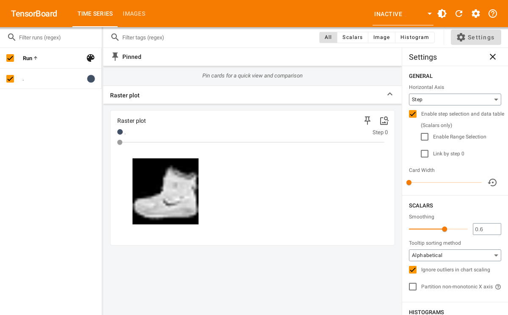

tfevents has the ability to write log images so they can be displayed in the TensorBoard dashboard. This guide describes different ways you can log images with tfevents and how to extend this functionality to other kinds of R objects that you might want to log as images in the dashboard.
From arrays
The most common way to write images is when you have a batch of image data in an R array. For example, suppose we want to write the first 5 training samples available in the Fashion MNIST dataset builtin into Keras.
fashion_mnist <- keras::dataset_fashion_mnist()
train_imgs <- fashion_mnist$train$x[1:5,,]/255
str(train_imgs)
#> num [1:5, 1:28, 1:28] 0 0 0 0 0 0 0 0 0 0 ...tfevents supports writing a batch of images from an array as long as
the array has 4 dimensions: batch_size,
height, width and channels. Thus
for the images in the Fashion MNIST dataset we need to add an extra
dimension denoting that those images have only one channel, ie. they are
grayscale images.
We can now log them to the default log directory (logs)
with:
log_event("Training samples" = summary_image(train_imgs))If we open the TensorBoard UI in the logdir we will see something like the below:
tensorflow::tensorboard(normalizePath("logs"), port = 6060)
#> Started TensorBoard at http://127.0.0.1:6060Notice that images are also associated to a global step counter. If you save log images at multiple steps you will be able to visualize hwo they change using the slider in TensorBoard.
From ggplot objects
You can also write images from ggplot2 plots, for example:
library(ggplot2)
p <- ggplot(mtcars, aes(x = hp, y = mpg)) +
geom_point()You can log plots using log_event and
summary_image and they will be displayed in TensorBoard.
The default size is 480x480 pixels but you can change the default by
passing width and height to
summary_image:
temp <- tempfile("logdir") # use another logdir
set_default_logdir(temp)
log_event("Ggplot2 plot" = summary_image(p))We now launch TensorBoard and see:
tensorflow::tensorboard(temp, port = 6061)
#> Started TensorBoard at http://127.0.0.1:6061Extending
Currently those are the only two builtin supported objects for writing images with tfevents. However we provide lower level interfaces that allow you to extend support for your own data type.
The summary_image function is an S3 generic, so you can
implement it for your own type. For example, we could implement support
for logging a raster image by implementing a method for it. We also
provide methods for lower level representation of images, for example,
summary_image.raw can write a raw() vector
containing a PNG encoded image.
Let’s implement a method for writing raster images, created with
as.raster(). For example, we can use the first image in the
Fashion MNIST dataset that we used earlier.
Now let’s define the summary_image method for the
raster class. We can get a PNG encoded image by saving it
to a file using grDevices::png and then reading it back to
R.
Note that it’s important to have metadata and
tag arguments in the signature so your users can customize
hwo the image is displayed in TensorBoard.
summary_image.raster <- function(img, ..., width = 480, height = 480, metadata = NULL, tag = NA) {
temp <- tempfile(fileext = ".png")
on.exit({unlink(temp)}, add = TRUE)
grDevices::png(filename = temp, width = width, height = height, ...)
plot(img)
dev.off()
sze <- fs::file_info(temp)$size
raw <- readBin(temp, n = sze, what = "raw")
summary_image(
raw,
width = width,
height = height,
colorspace = 4, # number of channels in the IMG. since PNG - 4
metadata = metadata,
tag = tag
)
}We can now save the raster image with:
temp <- tempfile("logdir") # use another logdir
set_default_logdir(temp)
log_event("Raster plot" = summary_image(img))It will be displayed in the dashboard:
#> Started TensorBoard at http://127.0.0.1:6062